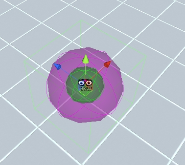

First Person Exploration Kit: Creating a Basic Player Dock
Dock Objects
Dock interactions allow for the player to "dock" at a location such as a computer terminal, chair, or arcade machine. Along with a locked position, the player
will also have a restricted view. For example, if creating a computer terminal, the player will not be able to move while docked, and they can have a view that is
restricted to only allow them to look at the computer screen and keyboard.
There are two example docks included in the package: A simple chair that the player can simply sit it, and a complex arcade machine mini game that you can play.
Here are the steps required to make a simple dock:
- Create an empty Game Object, rename it "MyDock"
- Add a Box Collider or other primitive collider. This will be the "Interactable" zone that the player must look at and interact with to dock onto the object.
- Add the FPEInteractableDockScript component.
- Add an empty child Game Object, rename it "SeatPosition".
- Add another empty child Game Object, rename it "FocalPoint".
- Click on "MyDock" parent object, and assign "SeatPosition" into the "My Dock Transform" field, and "FocalPoint" into the "My Focus Transform" field.
- You will notice that two new gizmos will be drawn, one for each of the newly assigned child transforms:

- Move the two child transforms so that the purple "SeatPosition" transform corresponds to the player docked location, and the green "FocalPoint" corresponds to where you want the player's focus to be when docked.
Note: The transform assigned to "My Dock Transform" (in this example, "SeatPosition") will align to the player's center point. So, you probably want it to be a little higher than where the player might logically sit down.
- Adjust the rest of the "Dock Specific Values" Inspector fields:
- Docked View Limits: The approximate view angle limits, centered on the specified "My Focus Transform" position. Default is (45,45).
- Smooth Dock: If true, player will smoothly lerp in and out of the dock position.
- Dock Hint Text: The interaction text placed below the reticle for dock action (replaces base Interaction String)
- Un Dock Hint Text: The interaction text placed below the reticle for un-dock action
- Play Dock Sounds: If true, dock sounds will be played.
- Docking Sound: The sound that is played when the player docks (e.g. a leather chair squeak, chair legs scraping on the floor, computer powering on, etc.)
- Un Docking Sound: The sound that is played when the player un docks (e.g. chair being pushed back under the desk, computer shutting off, etc.)
Events (Optional)
- Dock Started Event: These events fire when the player first starts to dock.
- Dock Finished Event: These events fire when the player is fully in the dock position.
- Un Dock Started Event: These events fire when the player first starts to un dock.
- Un Dock Finished Event: These events fire when the player is fully out of the dock position.
- Run the scene, and interact with the new MyDock object.
- Adjust relative positions of the "SeatPosition" and "FocalPoint" transforms as well as Dock View Limits until it feels correct.
- Add other meshes or objects around the dock as required to round out the interaction for your specific needs (e.g. a computer desk, chair, keyboard, instruction sheet, etc., etc.)
Below is a screenshot of our completed sample dock with an comfy chair model.
And here is the player's view while seated in the completed "chair" dock.
Note: By default, Dock states are saved and loaded at a basic level. For example, if the player was sitting in a chair when they saved their game, they will
still be sitting in the chair when they load their game. Saving additional context or data related to other interactable objects the player might use while docked is up to you. For
example, if you have a computer terminal that the player uses while docked, and you want to save the computer terminal state as part of the saved game, you will need to implement
that yourself. Please refer to the Save/Load System documentation and included demo prefabs for more details.